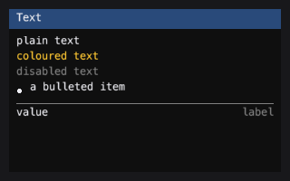
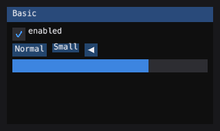
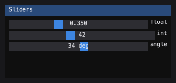
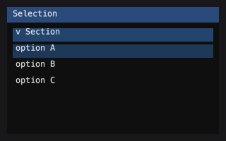
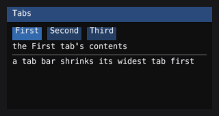
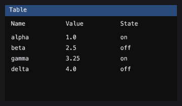
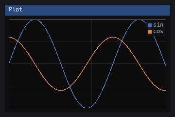

Widget guide
The families below are the ones emtk.CONTROL_MODULES enumerates. Each
module is documented in the API reference (generated from its docstrings);
this page gives the shape of each family and a runnable example.
Text
widgets.text draws strings in the seven layouts the reference
distinguishes: plain text, coloured, disabled, wrapped, bulleted, labelled
and separated.

painter = RecordingPainter()
with im.frame(painter, (0, 0, 300, 200)):
im.begin("Text")
im.text("plain")
im.text_colored((255, 200, 50), "coloured")
im.text_disabled("dimmed")
im.bullet_text("bulleted")
im.separator()
im.end()
assert "plain" in painter.strings
assert "coloured" in painter.strings
Basic
widgets.basic carries the foundational controls: Button,
Checkbox, SliderFloat, ProgressBar,
TreeNode, Separator, Toggle,
RadioGroup, InputInt, Combo,
ListBox, Table, Tabs, TextInput,
Tooltip, ColorEdit4, PlotLines,
Histogram, ScrollBar, and the layout helper
fit_text().
These are retained controls: they own their state and draw into a box.
The immediate-mode functions in im are the other shape.

painter = RecordingPainter()
with im.frame(painter, (0, 0, 300, 200)):
im.begin("Basic")
im.checkbox("enabled", True)
im.progress_bar(0.7, (0, 0, -1, 0))
im.end()
assert len(painter.fills) > 0
Sliders
widgets.sliders ports the full slider family: horizontal and vertical,
float and integer, linear and logarithmic, single and multi-component, and
slider_angle() (radians stored, degrees shown). The reference’s
ScaleRatioFromValueT / ScaleValueFromRatioT pair is ported
faithfully, including the awkward half: a logarithmic slider cannot take
log(0), so the bounds are fudged away from zero by an epsilon derived
from the format string’s precision.

painter = RecordingPainter()
with im.frame(painter, (0, 0, 300, 200)):
im.begin("Sliders")
changed, f = im.slider_float("float", 0.5, 0.0, 1.0)
changed, i = im.slider_int("int", 5, 0, 100)
im.end()
assert isinstance(f, float)
assert isinstance(i, int)
Drag
widgets.drag provides scrubbing controls: a number you scrub rather
than a slider you aim. The box is only where the gesture starts; from
then on the value moves by the mouse’s delta, scaled by v_speed. An
integer drag at a tenth of a unit per pixel would round every single event
to zero and never move at all — the reference fixes this with an
accumulator (g.DragCurrentAccum), ported faithfully here.
painter = RecordingPainter()
with im.frame(painter, (0, 0, 300, 200)):
im.begin("Drag")
changed, v = im.drag_float("drag", 1.0, 0.01)
im.end()
assert isinstance(v, float)
Inputs
widgets.inputs ports the reference’s scalar editor: a field you type a
number into, with optional -/+ buttons and a printf format that
decides both how the value is shown and how the typed string is read back.
Also carries InputTextMultiline and InputTextWithHint.
Colour
widgets.color ports the reference’s colour family: a swatch
(ColorButton), a numeric editor (ColorEdit4 and
ColorEditRGB), and a saturation/value picker with a hue bar
(ColorPicker4). The hue-state bug is avoided structurally:
ColorState holds H, S, V and the byte triple side by side, so a
drag on the hue bar cannot snap to red at the white or black edge.
Selection
widgets.selection ports Selectable,
CollapsingHeader, and the multi-select model
(MultiSelectState) that turns clicks plus modifiers into
selection requests.

painter = RecordingPainter()
with im.frame(painter, (0, 0, 300, 200)):
im.begin("Selection")
im.selectable("option A")
im.selectable("option B")
im.collapsing_header("Section")
im.end()
assert "option A" in painter.strings
List view
widgets.list_view provides virtualised lists: the view asks the model
for the rows it is about to draw and no others, so a list of a hundred
thousand rows costs the same as a list of twenty.
Tabs
widgets.tabs ports the reference’s full tab bar: measured per-tab
widths, shrinking (the widest tab pays first), scrolling (with the
selected tab kept visible), and reordering by drag.

Tables
widgets.tables ports the reference’s data table: sized, resized,
reordered, multi-sorted, frozen, clipped.

painter = RecordingPainter()
with im.frame(painter, (0, 0, 300, 200)):
im.begin("Table")
im.begin_table("t", 3)
for col in range(3):
im.table_setup_column(f"Col {col}")
im.table_headers_row()
im.table_next_row()
for col in range(3):
im.table_next_column()
im.text(f"{col}")
im.end_table()
im.end()
Drag and drop
widgets.dragdrop ports the reference’s drag-and-drop: Payload,
DragDropSource, DragDropTarget, and the
DragDropContext state machine.
Text editor
widgets.text_editor is the port of ImGuiColorTextEdit: a colourising
text editor with syntax highlighting, bracket matching, undo/redo, and
multiple cursors.
Memory editor
widgets.memory_editor ports the imgui_club memory editor: a hex viewer
and editor for any buffer the host provides.
Layout
layout carries the layout cursor: the arithmetic that decides where the
next widget goes.
splitter() is the draggable divider between two
resizable panes, and splitter_behavior() is the drag
on its own for a window that draws its own bar. The sizes come back rather
than being written through pointers, as everywhere else in im:
>>> import emtk
>>> from emtk.testing import RecordingPainter
>>> state = {"left": 150.0, "right": 242.0}
>>> def two_panes():
... im.begin("panes")
... x, y = im.get_cursor_screen_pos()
... im.begin_child((x, y, state["left"], 200.0))
... im.text("controls")
... im.end_child()
... im.same_line(0.0, 0.0)
... moved, state["left"], state["right"] = im.splitter(
... "##v", im.Axis.X, 12.0, 200.0,
... state["left"], state["right"], 60.0, 80.0)
... im.same_line(0.0, 0.0)
... im.end()
... return moved
>>> with emtk.frame(RecordingPainter(), (0, 0, 400, 300)):
... moved = two_panes()
>>> moved, state["left"], state["right"]
(False, 150.0, 242.0)
thickness is the space the divider takes and the size of the grab
target; bar_margin insets what is actually drawn, so a bar that is easy
to hit does not have to look like a slab. min_size1 and min_size2
both hold at once, so a drag stops at whichever limit it reaches first
instead of collapsing the other pane.
Splitter
widgets.splitter is the same control retained: it owns the boundary, and
split() hands back the three rectangles
a two-pane layout is made of, already clamped.
>>> from emtk.widgets.splitter import Splitter
>>> sp = Splitter(150.0, thickness=12.0, min_size1=60.0, min_size2=80.0)
>>> pane1, bar, pane2 = sp.split(0.0, 0.0, 400.0, 300.0)
>>> pane1, bar, pane2
((0.0, 0.0, 150.0, 300.0), (150.0, 0.0, 12.0, 300.0), (162.0, 0.0, 238.0, 300.0))
They tile the region exactly. A resize too small for the starting sizes clamps rather than inverting a pane – and when the region cannot hold both minimums at once, the first pane keeps its own and the second is squeezed below it, which is arbitrary but stable. The alternative is a boundary that jumps between the two limits as the window resizes:
>>> pane1, bar, pane2 = sp.split(0.0, 0.0, 150.0, 300.0)
>>> sp.size1, sp.size2
(60.0, 78.0)
>>> pane1[2] + bar[2] + pane2[2]
150.0
Control
control defines the Control base class: the
contract every retained control follows.
Axis and markers
widgets.axis ports the implot linear axis.
widgets.markers provides scatter-plot marker shapes.
Plot
widgets.plot ports the implot BeginPlot / PlotLine /
EndPlot pattern as a context manager.

painter = RecordingPainter()
with im.frame(painter, (0, 0, 300, 200)):
im.begin("Plot")
im.end()
assert painter is not None
Circle plot
widgets.circle is a Circos-style circular layout, ported from
pyCirclize.
DrawList
drawlist provides ImDrawList names over any Painter:
add_line, add_rect_filled, add_circle_filled.
painter = RecordingPainter()
with im.frame(painter, (0, 0, 300, 200)):
im.begin("DrawList")
dl = im.get_window_draw_list()
dl.add_rect_filled(10, 10, 80, 40, (80, 80, 80, 255))
im.end()
assert painter.fills